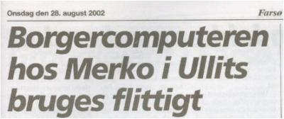
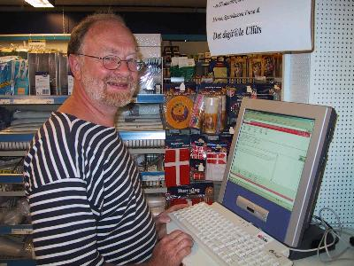
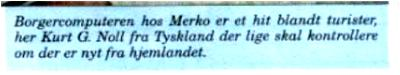
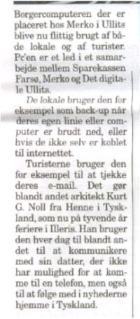
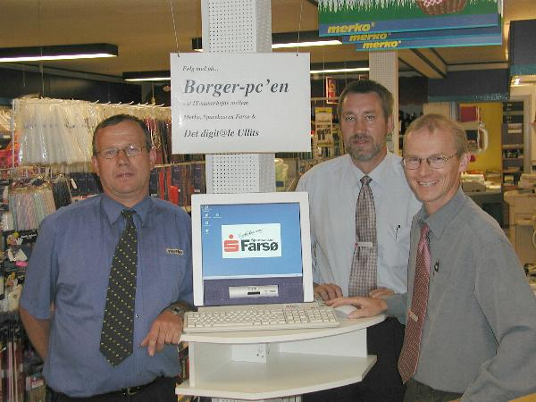
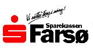

 |
|
  |
 |

Borger-pc´en er resultatet af et samarbejde mellem Merko, Sparekassen Farsø og Det digit@le Ullits. Dette er endnu et stort skridt for at løfte kendskabet til informationsteknologien i vort område. Har man ikke selv pc eller adsl er her chancen for at få prøvet mulighederne af.
Merko-købmanden stiller gerne plads til rådighed og giver gerne, efter bedste evne, svar på it-spørgsmål.
Jens Kristian Knudsen, der iøvrigt selv er med i styregruppen i DDU, er godt klar over, han måske skal vejlede kunderne med lidt ud over det sædvanlige. Men det er en rigtig god idé, at alle frit kan prøve kræfter med bredbånd og IT, siger han.

stiller det nødvendige edb-udstyr til rådighed -foreløbig i de 1½ år, der er tilbage af projekttiden. Den lokale sparekassebestyrer, Palle Asmussen, siger, at Sparekassen gerne vil være en aktiv medspiller i lokalområdet, hvorfor man meget gerne indgår i dette samarbejde.Som lokal tovholder er jeg glad for, at vi nu kan supplere Ullits digit@l-værksted ved at stille borger-pc'en til rådighed for borgerne. Nu håber jeg rigtig mange vil være nysgerrige og stille indkøbsvognen lidt til side og surfe lidt på nettet og bla. besøge www.ullits.dk, hvor der allerede er rigtig mange gode informationer.